GEM-Selektor version 2-PSI GEM-Selektor version 2-PSI
GEM-Selektor version 2-PSI GEM-Selektor version 2-PSIPrevious Page Back to Start Page
(45) Examining the calculated equilibrium partitioning and surface speciation
Let us take a
closer look at the previously calculated partitioning equilibrium
between the SiO2,am sorption phase and the aqueous
electrolyte (details about the model can
be found in Section 7 of the paper by Kulik [Radiochimica Acta
2002, v.90, p.815-832], click
here
for
pdf download).
Switch to the
"Results" page of the "Single Thermodynamic System" dialog and expand
the gas_gen and the sorption phase SiO2_1sTLM.
You should see something quite similar to that shown below.
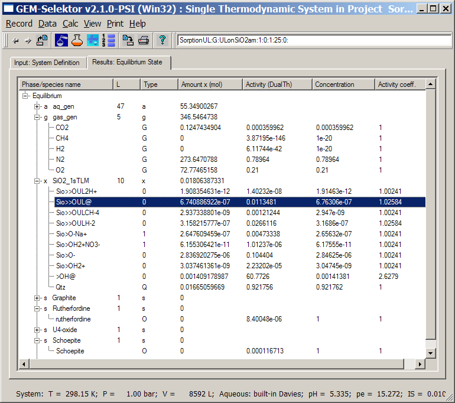
The
calculated "Activity"
value for CO2 gas is close to the atmospheric partial
pressure
(36 Pa). In the status (lowemost) line of the dialog, the calculated pH
=
5.335 and ionic strength (IS = 0.1 m) are indicated. As seen on Fig.
4,b in
[Kulik,
2002] paper, at this pH, 98-99% of uranyl should be adsorbed on the
amorphous
silica surface. Indeed, the calculated surface speciation shows that
67.4%
of the total uranium loading of 1e-6 mol is present as a
bi-coordinated
inner-sphere surface complex Sio>>OUL@ and
31.6%
- as another bi-coordinated surface complex Sio>>OULH-2;
the two other uranyl surface complexes are insignificant at these
conditions.
So, in total,
31.6 + 67.4 = 99.0 % of hexavalent uranium was calculated to be
adsorbed on 1 g/L amorphous silica. This strong sorption keeps the
total
dissolved uranium concentration below 1e-8 molal, which makes the free
uranyl hydroxide phase (schoepite)
undersaturated by almost 4 orders of magnitude (as seen in the
"activity"
column for the expanded Schoepite phase).
Inspection of
other surface species shows that the silica surface is significantly
deprotonated already at pH = 5.335: the calculated amounts of
inner-sphere Sio>O- and outer-sphere Sio>O-Na+
surface complexes are ca. 3 orders of magnitude greater than that of
their protonated counterparts.
All surface
species (except >OH@ which does not
affect surface charge and UVI adsorption) have activity
coefficients only slightly above unity (1.0024 for the site type
0 and 1.0258 for the site type 1). These activity coefficients are, in
fact, the competitive Langmuir surface activity coefficient terms
(SACT). Since this version of GEMS code, the new SACT are used instead
of the obsolete and less rigorous SAT terms (still used in the Kulik
2002 paper). Details can be found here.
Such small
SACT corrections mean, in fact, that the surface complexes on both site
types compete in a "nearly ideal" way, so the TLM Coulombic corrections
alone are sufficient to
describe correctly this system of low surface densities.
Indeed, the density of adsorbed uranyl species is less than 0.99
mkmol / 169 m2 = 0.00586 mkmol/m2 = 0.0035 nm-2.
The maximum site density on SiO2 surfaces is taken here to
be
4.6 nm-2 (site 0) and that for bi-coordinated UVI surface
complexes - 0.14 nm-2 (site 1).
To see more
details about the surface complexation model, open the "EqSurf" page of
"EqDemo" window. The corresponding setup of GEM TLM is accessible on
the "Surfaces" page of "System" window, both can be viewed at the same
time. Let us first take a look at the "EqSurf" page (use the "Explore GEM results"
 toolbar button to open it).
toolbar button to open it).
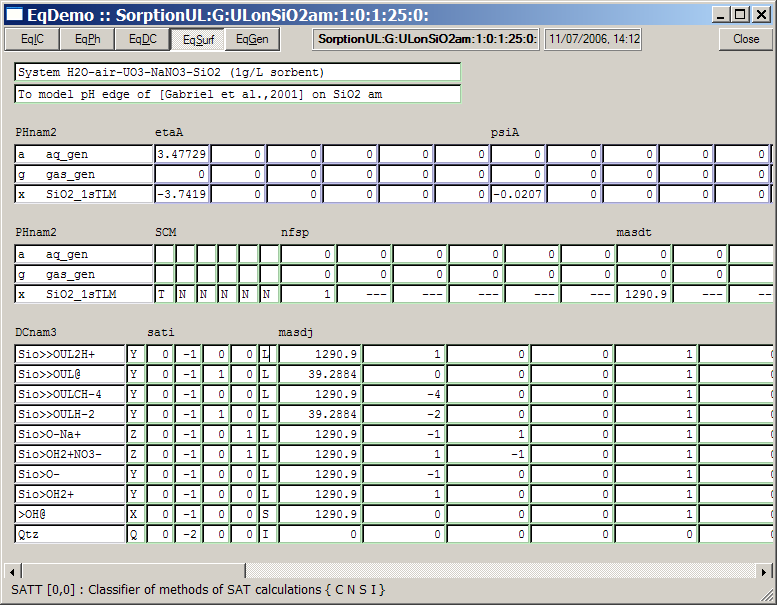
In the etaA
column, it is seen that the calculated total charge on the sorbent
surface is -3.74e-6 mol (put the cursor into cell to see the entire
value). This corresponds to density of negative charge -3.74 mkmol /
169
m2 = -0.022 mkmol/m2 = -0.0134 nm-2 =
-2.12 mC/m2. The corresponding TLM relative surface
potential
on zero plane (psiA column) is -0.0207 V. If you
scroll the whole page to the right, you will see a smaller amount of
charge on the beta-plane (etaB column) 0.265 mkmol
(i.e. the amount of adsorbed Na+ ions) and the calculated beta-plane
potential (psiB column) -0.0185 V. The latter
is still negative because the electrolyte concentration and pH are not
large enough to screen efficiently the development of negative charge
on zero plane.
The sati and masdj tables in the
lower part of the screenshot contain the same setup of the SCM as seen
previously in the sorption Phase definition. The only difference is
that the site densities are shown in units of micromoles per gram
sorbent and not in nm-2 as in the Phase. The SCM setup
can be changed in this SysEq record independently of the Phase
definition, as described below. This is especially practical when new
SCM is developed and one has to try different variants or parameters
quickly.
Details on
performed GEM TLM calculations can be found in the SCM-corrections.pdf
file (requires the Adobe Reader installed). Now, let us take a look on
how the sorption model is organized.
(46) Setting up SCM parameters in a sorption phase
Open the
"Surfaces" page of "System" window (use the "Set BCC"
toolbar button) and scroll
the DC_v2 list down to the end, as shown below.
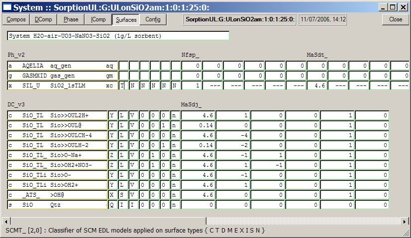
Please, note
that the values on this page have no meaning for phases other than the
sorption phase(s).
On each
sorption phase (one in this example), up to six surface types can be
defined, hence, each
array in the
upper row (SCMT_, Nfsp_, MaSdt_
and so on) has six columns. In this example, only one surface type
(with index 0) is
defined as described using the TLM ("T") code
againsta the SiO2_1sTLM
sorption phase. The fraction of total sorbent surface assigned to that
surface type is 1 (set in the Nfsp_ field). The
total maximum site
density
for competitive surface species is set to 4.6 nm-2 (MaSdt_
field).
By scrolling the page to the right, you can see that the C1
capacitance density parameter is set to 1.0 F/m2 (XcapA_)
and the C2 parameter - to the usual TLM default value 0.2 F/m2
(XcapB_).
The permanent surface charge density is set to 0 mkeq/m2 (XfIEC_).
The lower
part of
the page displays some settings specific to surface sites and species.
These settings have the same format as in the sorption Phase record,
and are copied into the System definition when it is created for the
first time. Later on, some parameters and codes can be changed here,
the changes will be taken into any SysEq records "cloned" out of this
one, but will have no adverse effect on the Phase record kept in the
thermodynamic database.
The mDCC3
column (to the right of species name
list DC_v3) encodes the surface
species as inner-sphere ('Y'),
outer-sphere ('Z'),
the primary inner-sphere amphoteric OH group ('X'),
and the sorbent ('Q').
In Surfaces page shown above, the surface species are allocated
to surface- and site types in the SATC_ table columns.
Codes in the SATC_[0] column ('L' for most surface
species which means competitive Langmuir isotherm) define the impact of
site density parameter to density of surface species.
SATC_[1] column allocates
surface species to the whole sorbent ('V') or to some of its
end members (irrelevant for the present model).
SATC_[2] column allocates
each surface species to a surface type, numbered from 0 to 5 (maximum 6
surface types per phase are technically possible); the surface types
are described on Page 3 of the Phase window (will be shown later).
SATC_[3] column allocates each
surface species to a site type, counted from 0 until 5 separately for
each surface type. In other words, maximum 36 site types can be
considered on all surfaces of one sorption phase. To each site type,
one, many, or no surface species can belong.
SATC_[4] column is important
for multi-layer EDL models such as TL or 3L because it allocates the
outer-sphere surface charge of a surface complex to beta- or third
plane.
SATC_[5]column contains codes
of units in which densities of surface site types are expressed (for
now, only 'n' - in nm-2).
.
The site densities are entered into the MaSDj_[0] column located next
to the right of the SATC_
table. Equal numbers
must be entered against all surface species competing for sites of the
same type; in other words, competition on each site type on each
surface type is considered separately via computing special activity
coefficients (SACT) which replace balance constraints on total number
of sites.
The second [1] column of the MaSDj_ table contains for
each surface complex the unit charge allocated to 0 EDL surface plane
(i.e. the mineral surface). The MaSDj_[2] column contains the
unit charge allocated to beta- or third EDL plane, depending on the
code in the SATC_[4] column. Both
columns provide enough flexibility for implementing Stern EDL models,
as well as three-layer CD MUSIC models where the surface charge of a
species is distributed between 0, beta and third plane, differently for
various adsorbed cations and anions.
MaSDj_[3] column (usually
contains zeros) may contain values of the Frumkin interaction parameter
used if the Frumkin isotherm is applied instead of the Langmuir
isotherm to some surface sites.
MaSDj_[4] column
contains the "dentateness" of surface species, 1 for monodentate
(default), 2 for bidentate, 3 for tridentate, 4 for tetradentate ones.
This parameter (not to be mixed with the coordination number) describes
how many surface sites are covered by one adsorbed molecule thus making
them inaccessible to any other adsorbates. This parameter is used
in QCA isotherm - a polydentate form of the non-competitive Langmuir
isotherm.
MaSDj_[5] column is reserved
for other parameters used in further development (e.g. BET isotherm).
For details, consult
the gm_phase.html
and gems_scm.html
manuals for configuring and setting up the sorption
parameters.
Note that
the
settings in SCMT_, Nfsp_, MaSdt_, XcapA_, XcapB_, XfIEC_,
SATC_, and MaSdj_ data objects can be
changed and saved in
a particular SysEq record which then can be "cloned" with these new
settings (this feature is useful for adjusting of SCMs and fitting of
their parameters against experimental data). However, the class codes
of dependent components in the mDCC vector cannot
be saved in SysEq records; to change them, you will have to edit
thePhase
record and then open the project
again.
(47) Running and checking surface complexation equilibria
Let us now explore the
effects of changing various SCM parameters and state variables on
GEM-calculated partitioning equilibria between sorption phases, aqueous
solution and gas mixture.
Potentiometric titrations
are the most common type of adsorption experiments. Let us see the
effects
of adding acid or base to the system "SiO2,am - uranyl - NaNO3
electrolyte - air" considered earlier (see previous
page). The pH cannot be set directly at input in
GEMS code; in order to get systems with given pH values (say 3.0,
4.0, 7.0, 9.5), one has to adjust the additions of acid (HNO3)
and/or base (NaOH)
and try again until the desired pH is calculated within reasonable
precision
limits (usually 0.01).
Now, get back
to the "Single
Thermodynamic System" dialog and make sure that the SysEq record "SorptionUL:G:ULonSiO2am:1:0:25:0:"
is loaded. Using the the "Set BCC"
toolbar button, open the
"Compos" page of "System" window and add there 0.0001 mol HNO3
as shown below:
When done, switch back to "Single Thermodynamic
System" dialog and click on the
"Calculate the equilibrium state"  toolbar button
to re-calculate the equilibrium state. You should see the following
Progress dialog:
toolbar button
to re-calculate the equilibrium state. You should see the following
Progress dialog:
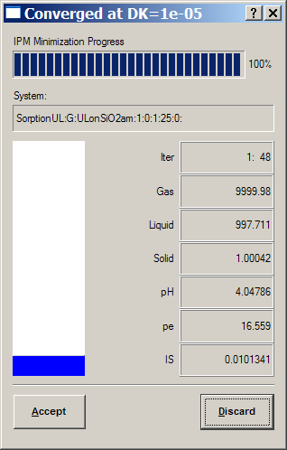
Calculated pH
has changed from 5.34 to 4.05. To get pH even closer to 4.0, click on
the "Accept" button, get back to the "Compos" page of the "System"
window and change
the addition of HNO3 to 0.000111 mol; then re-calculate the
equilibrium to get now pH = 4.003. How the partitioning of uranyl has
changed?
To see that,
first click on the "Explore GEM results"
toolbar button to open the "EqIC" page of
"EqDemo" window:
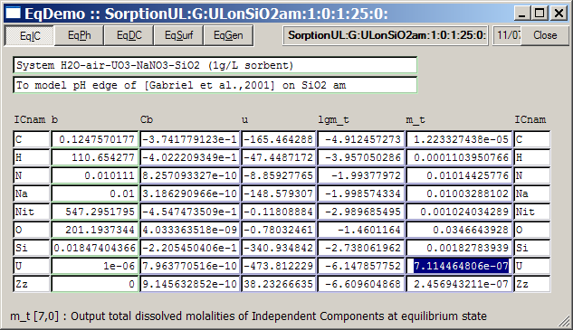
The total
dissolved uranium concentration (highlighted) is now 0.7114 micromolal,
or ca.
71% of the
total uranium loading (1e-6) in this system. This means that at pH =
4, only ca. 29% of uranyl is adsorbed on the amorphous silica surface
(compare
with Fig. 4,b in [Kulik, 2002] paper). Inspection of surface speciation
(on "Results" page of the "Single Thermodynamic System" dialog) shows
that
the adsorbed uranyl is now almost entirely represented by a neutral Sio>>OUL@
surface complex.
As an
exercise, clone the current record by executing the
"Record" "New(Clone)" menu command in "Single Thermodynamic
System" dialog and changing the fourth
field of SysEq record field to 0; 2; 3; and adjust the calculated pH to
3.0;
7.0; 9.5 accordingly. Then explore how the adsorption and surface
speciation
of uranyl changes at these pH values and which surface complexes
prevail. The input additions of acid and base should be approximately
as follows:
| Record
CSD # |
0 |
1 |
2 |
3 |
| Input
added HNO3, mol |
0.00111 |
0.000111 |
0 |
0 |
| Input
added NaOH, mol |
0 |
0 |
0.000086 |
0.03 |
| pH,
calculated |
3.0 |
4.0 |
7.0 |
9.5 |
| %U
ads, calculated |
<1.0 |
29.0 |
>99.99 |
<0.7 |
We see that the effect of pH on the adsorption of UVI on SiO2,am is dramatic. On the next pages of this tutorial, we will learn how to automatize modelling and plotting of pH edges and isotherms by creating Process simulators and GtDemo data samplers.
Now, let us
try to convert our GEM SCM to describe a slightly different system -
the sorption of uranyl onto SiO2,am but at different S/L
ratio (0.13 g/L), specific surface area (183 m2/g), total
uranium loading (8.5e-6 M), electrolyte concentration (0.1 M NaNO3)
and isolated from
atmospheric CO2.
First, in "Single
Thermodynamic System" dialog, get back the SysEq
record "SorptionUL:G:ULonSiO2am:1:0:25:0:"
and then execute the
"Record" "New(Clone)" menu command; in the appearing record key dialog,
give the
system a new name as shown below:
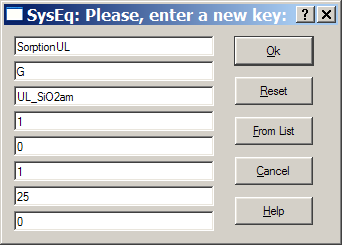
In the
appearing "Compos" page of "System" window, modify the recipe as shown
below. Don't forget to zero off the addition of AtmAirNit.
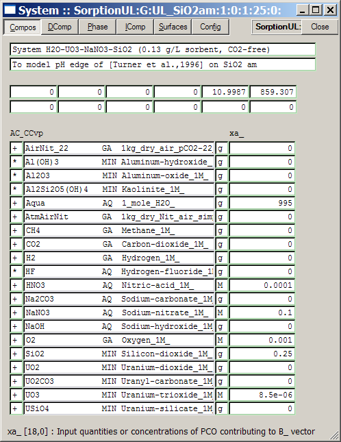
Switch to the
"Phase" page and change there the specific surface area to 183 m2/g:
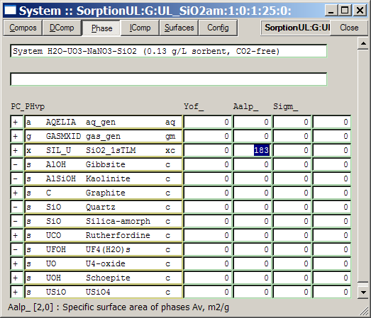
Next, switch to the "IComp" page and add 20 moles of decoupled nitrogen
to the bulk composition in order to create a CO2-free
atmosphere:
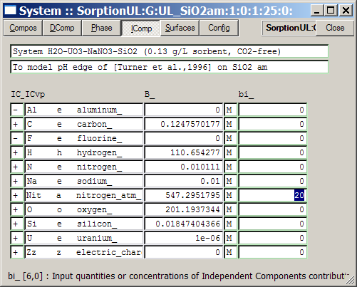
When ready, click on the
"Calculate BCC"  toolbar button to check
whether the system recipe has been entered correctly. You should get
the warning dialog suggesting to switch off the "C"
independent compenent. This is not an error because we are going to
model a carbon-free system, so press the "Check/Ok" button to
proceed.
toolbar button to check
whether the system recipe has been entered correctly. You should get
the warning dialog suggesting to switch off the "C"
independent compenent. This is not an error because we are going to
model a carbon-free system, so press the "Check/Ok" button to
proceed.
Now, click on
the "Calculate the equilibrium state" toolbar button
to compute the new equilibrium state. In the Progress dialog, you
should see pH ca. 4.18 and the mass of solid ca. 0.14 g. Click on the "Accept"
button and check the calculated volume of aqueous phase and the mass of
"Qtz"
sorbent. Make necessary corrections to additions of water, SiO2
and HNO3 on the "Compos" page to get 1 L of aqueous solution
at pH = 5.5 and 0.13 g of the sorbent. The "Compos" page should now
look
like this:
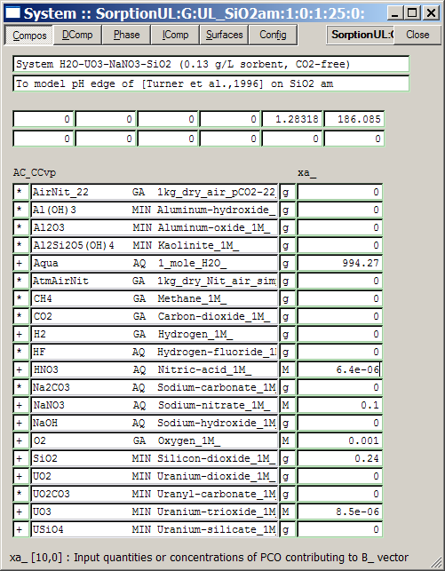
The
calculated
equilibrium speciation (see below) demonstrates that the predominant
surface
species of uranyl - Sio>>UL@ - has now a
significant SACT correction of 8.98.You can easily calculate that, in
total, three UL surface complexes at pH 5.5 hold
ca. 60.7% of the total uranium loading (take care that the amount of
binuclear Sio>>OUL2H+ species should be doubled in this
calculation).
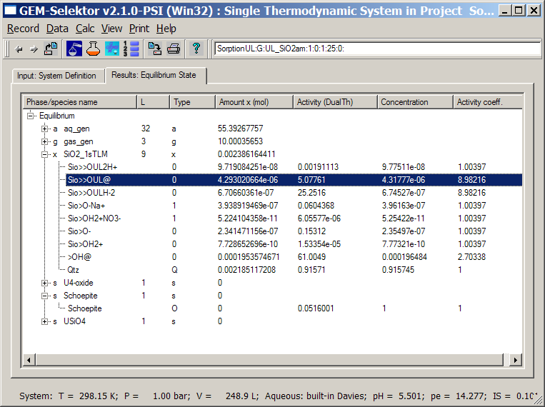
Comparison
with Fig. 4,c in [Kulik, 2002] shows that this model under-predicts
adsorption of uranyl in ca. 20 % at this pH. The reason is that the SAT
correction
is too strong, i.e. the individual maximum site density imposed to the
Sio>>UL@ surface
complex
is too small. To check it, open the "Surfaces" page of "System" window
and
scroll down the list of dependent components in the lower part of the
page.
Indeed, the maximum site density constraint is set to 0.14 nm-2,
while in the model on Fig. 4,c [Kulik, 2002] it is set on 0.18 nm-2.
Correct it as shown below:
You will also
have to switch to the "Compos" page and adjust the addition of HNO3
to 5.23e-6 mol in order to keep pH at 5.50. When ready,
re-calculate the equilibrium state.
Now, as seen
from the "EqIC" page of "EqDemo" window, ca. 72.5 % of uranyl is
adsorbed, which is stiill a little under-prediction. However, the
surface binding model we just calculated is not exactly the same as the
one on Fig. 4,c [Kulik, 2002]. The old model used the non-competitive
SAT terms separately for both mononuclear uranium surface species; in
the new model, we assumed that these species compete for the same kind
of surface sites.
Let us change
our SCM in order to reproduce the earlier model. To do that, open
the Surfaces page of the System window again and change the site type
index from 1 to 2 for the Sio>>OULH-2 species. Also change
the addition of HNO3 to 5e-6 mol and re-calculate equilibrium, further
adjusting the addition of acid until pH = 5.50 is calculated (at 4.0e-6
HNO3 added). Now, examine the total percentage of uranium
adsorbed ( 79.3 %), already in agreement with Fig.4,c [Kulik,
2002].
What have we
actually done in the last calculation? We simply assumed that the
Sio>>OUL@ species occupies not the same kind of sites as the
Sio>>OULH-2 species, hence they do not compete on the surface of
SiO2,am. This is seen in the surface speciation in two different values
of Langmuir SACT terms (activity coefficients), both much smaller than
in the case when both surface species compete for the same kind of
surface sites at 0.18 nm-2.
A more
realistic binding model would be to assume that both uranyl surface
species compete for the same kind of sites, but of higher density, say,
0.4 nm-2 (which is still less than 1/10 of the density of
reactive OH groups on SiO2 surfaces, 4.6 nm-2).
To implement this model, open the Surfaces page of the System
window and revert the site index for the Sio>>OULH-2 species to
1, and also change the density of both Sio>>OUL@ and Sio>>OULH-2
species to a new site density of 0.28 nm-2, as shown below:
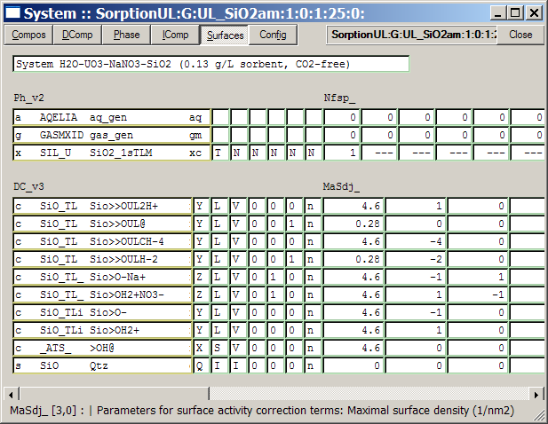
Adjust also
the addition of HNO3 in calculating equlibria (to 3.66e-6 mol) to get
calculated pH equal to 5.50.
Examine the
results. The adsorbed fraction of uranyl should be ca. 85.9 % - a
perfect fit to the experimental
data point at pH 5.5 with 85.9% of uranium adsorbed, even a better fit
than that shown in the paper. The surface speciation is shown below:
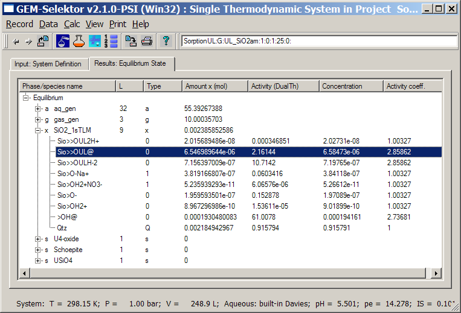